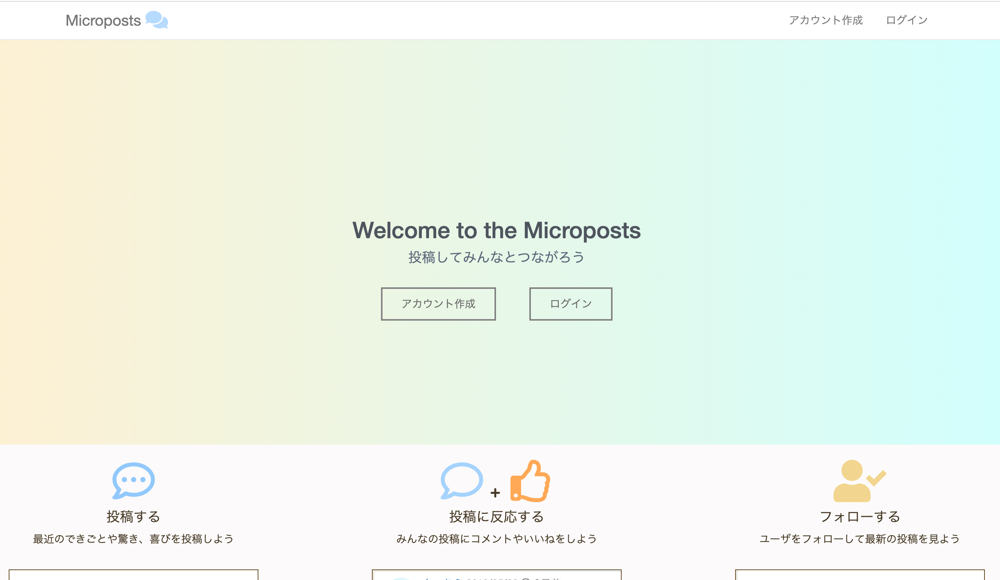
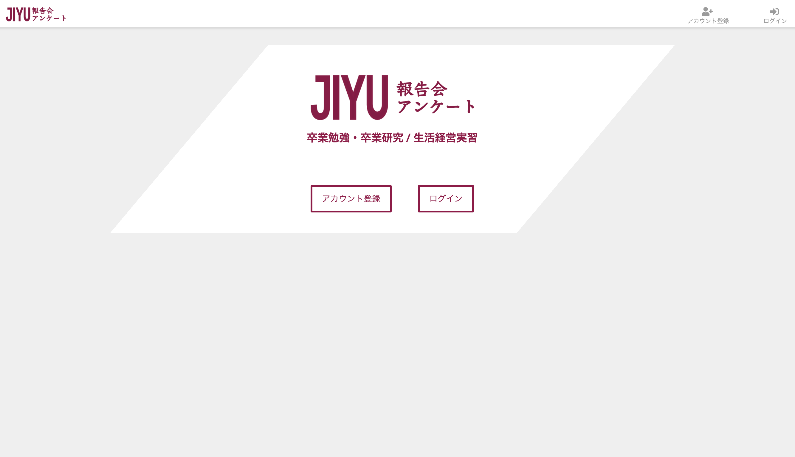

Rio Sanka's portfolio
Works
Microposts（twitterクローン）

アプリ名：Microposts
説明：twitterにある機能を自分の力で実装することを目的に作成したアプリです。
機能：ログイン / 投稿 / 投稿に対するコメント / フォロー / いいね
技術：Ruby on Rails / Ruby / html / css / bootstrap / git
URL：
https://micropost-threehouse.herokuapp.com
GitHub：
https://github.com/rio-threehouse/first_app_micropost
自由学園報告会アンケートアプリ

アプリ名：自由学園報告会アンケートアプリ
説明：web上でアンケートフォームの作成、回答を行い、結果を自動集計するアプリです。
機能：ログイン / アンケート作成 / アンケート回答 / アンケート集計 / チェック保存
技術：Ruby on Rails / Ruby / html / css / bootstrap / git / illustrator
URL：
https://jiyu.herokuapp.com
GitHub：
https://github.com/rio-threehouse/presentation_opinions_app
Profile
三家梨央（さんかりお）
Ruby on Railsを使用したwebアプリの開発に取り組んでいます。モノづくりが大好きです。
スキル
Ruby on Rails / Ruby / html / css / bootstrap / git / illustrator / JavaScript（勉強中）
特技・趣味
料理 / 裁縫 / リズムゲーム / アニメ・映画鑑賞 / バドミントン